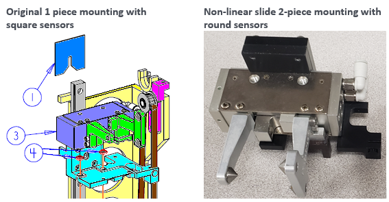
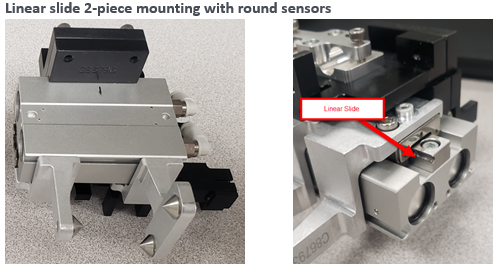
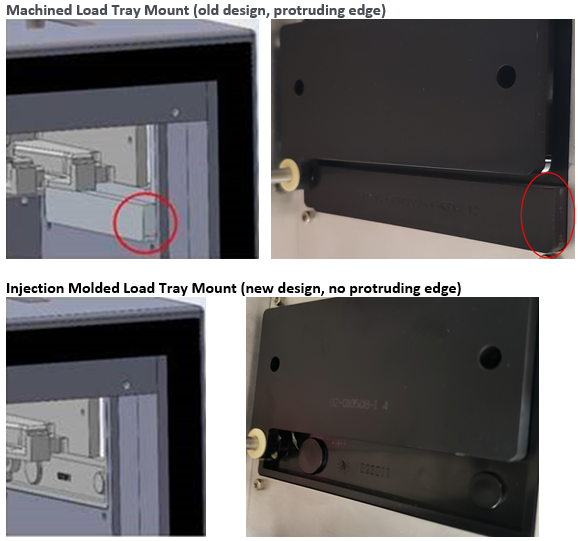
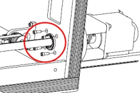

Installing Linear Slide Reagent Pack Gripper
This procedure describes how to replace the reagent pack gripper in the reagent storage module and install the linear slide gripper design. Replace the reagent pack gripper in the reagent storage module when the gripper opens or closes slowly.
Reagent Gripper Style:
Previous Designs:

New Design:

Reagent Load Tray Mound Design:

Use this chart to determine the parts needed and procedures to follow to replace the gripper.
| Gripper Open/Close Sensor Shape | Rgt. Load Tray Mount Design | Gripper Style | Parts Needed | Procedures to Follow |
|---|---|---|---|---|
| Square | Machined | One-piece mount |
|
|
| Round | Machined | One-piece mount |
|
|
| Round | Machined | Either (one or two-piece mount, non-linear slide) |
|
|
| Round | Injection Molded | Either (one or two-piece mount, non-linear slide) |
|
|
| Round | Injection Molded | Linear slide |
|
|
-
Prepare the instrument.
-
Open the SPU.
 Note: The SPU is hinged on the left side. The right side is released and can be swung out from the instrument to approximately 45 degrees.
Note: The SPU is hinged on the left side. The right side is released and can be swung out from the instrument to approximately 45 degrees.- Open the upper left cover of the instrument.
- Loosen the locking screw.
Note: The locking screw prevents the SPU from swinging outward from the instrument. It is not necessary to remove the screw because the SPU plate is slotted.

- Remove the 3/16-in hex bolt located near the right end of the SPU cover.
- Open the lower right access panel on the front of the instrument.
- Pull the spring-loaded captive pin that holds the panel (located under the SPU) to the frame.

- Grasping the SPU near the right end, swing the right end away from the instrument.
Warning: The SPU off-load area slides forward and rearward as the SPU is swung in and out. To prevent damage to the SPU or the off-load area, confirm that nothing obstructs the movement of the off-load area as the SPU is moved.
-
Remove the gripper carriage from the upper shaft.
Note: If a linear slide gripper is being replaced with another linear slide gripper, the gripper carriage does not need to be removed. Proceed to the appropriate "remove reagent pack gripper" steps.
- Remove the 4 screws (7/64-inch) securing the Z motor mount to the module. The screws are located on the inside wall in the lower right corner of the module.

- Hold the gripper gantry with your left hand, while twisting the Z-drive motor with your right hand and pull the entire assembly towards the right. After the left-side bearing of the assembly is clear of the side plate, the gripper gantry will drop enough to clear the red linear bushing.
- Tilt the gripper gantry outward to allow access to the gripper. Use caution when handling the gantry to prevent bending the shaft.

- Remove the 4 screws (7/64-inch) securing the Z motor mount to the module. The screws are located on the inside wall in the lower right corner of the module.
-
Open the SPU.